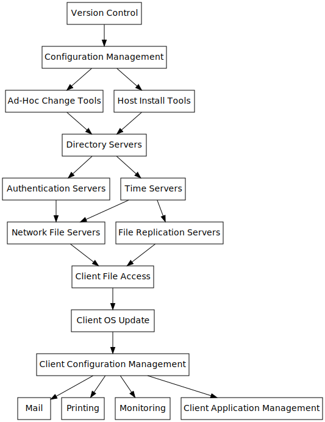

Create an infrastructure with an emphasis on security, resiliency and ease of maintenance.
End Goal
Produce a working implementation of a secure, resilient and easy to maintain infrastructure. This will be published in the form of version-controlled configuration documents, with the philosophy and background of the chosen configuration documented here. Anyone should be able to download the base operating system, and the configuration documents should convert that base OS into the desired state.
The documentation on this site is split into two sections, Design and Implementation. The Design documents what the infrastructure should look like in high level terms. The Implementation is a working version that follows the design.
Background
The intent is for the infrastructure to work regardless of participating in the wider internet. The design is aimed at organisations that have strict security and uptime requirements (government/critical physical infrastructure), although there is nothing preventing other organisations from adopting this design and/or changing it to suit them.
Organisations would likely still use the existing internet infrastructure in order to connect between their sites, however, there is the option to not be dependent on the third-party PKI and DNS systems. By removing the dependencies between organisations, there is greater decentralisation which allows more freedom.
High-Level Design
